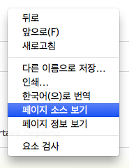

HTML 제목태그 <h6>~ <h1>
1. 제목태그 <h>
제목은 <h6>에서 <h1>태그를 사용한다
브라우즈는 제목의 앞뒤에 여백을 자동으로 추가한다.
- <h1>This is a heading</h1>
- <h2>This is a heading</h2>
- <h3>This is a heading</h3>
제목에는 <h>태그를 사용한다. 일반 텍스트 태그에 <big> or <bold>태그를 사용하여 제목으로 사용하면 안된다.
검색 엔진은 웹페이지의 내용을 찾는데 제목을 이용하여 검색한다. <h>태그를 사용하지 않으면 검색 엔진이 웹페이지를 찾지 못할 수도 있다
2. 라인태그 <hr>
<hr>태그는 html 페이지에 수평선을 작성한다
- <p>This is a paragraph.</p>
- <hr>
- <p>This is a paragraph.</p>
- <hr>
- <p>This is a paragraph.</p>
3. 브라우즈에서 html 소스 보는 방법
대부분의 브라우즈들은 페이지에서 마우스 오른쪽 버턴을 클릭하면 "소스보기" 메뉴가 있다
크롬브라우즈에서 마우스 오른쪽 버턴 클릭했을때
